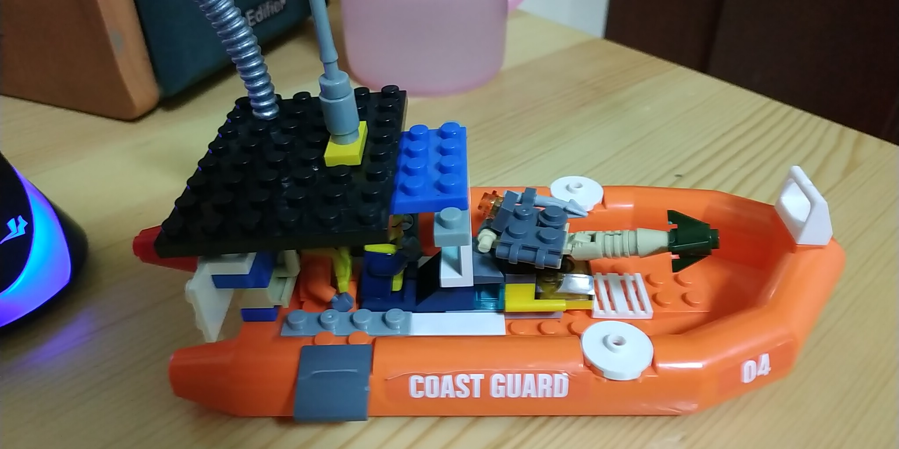

炮艇气垫船

这是一艘炮艇气垫船。它特点是：
- 发动机小，体积不超过整个舰体的3%
- 速度又特别快，最高时速721节
- 火力强大，舰中间有一门旋转高速火箭炮，而且可以防空
- 舰体后方贴近发动机的位置还有一门火炮，它也可以防空
- 舰体顶部有特殊天线可以探测到隐形战机的位置，可以辅助火炮瞄准
- 舰体上下都包裹着金刚石和钢做成的合金装甲，结合了金刚石的硬度和钢的韧性
- 虽然装甲只有3英寸，但由于速度特别快，敌人很难击中，所以3英寸的装甲已经足够了
- 船舱容量很小，最多只能容纳4人，其中两人是驾驶员，可以搭乘两位乘客，因此经常被用来在滨海城市进行搜救任务